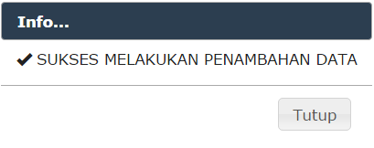
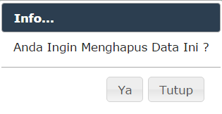

Indikator merupakan (Satu) / 1 Tahap dibawah program , proses menambah Indikator ini dilakukan dengan melakukan klik pada Baris "PROGRAM" , kemudian dilanjutkan dengan mengisi Form Yang Disediakan, Begitu pula dengan proses edit , dilakukan dengan melakukan klik pada ROW "INDIKATOR" Kemudian Proses Ubah Dilakukan dengan mengisi Data Data Yang Tersedia Pada Form Dialog.
1. Menambah Data Indikator
1. Klik Menu "Aksi" Pada Data "Program"
2. Klik Menu "Tambah Indikator"
Gambar Penambahan Data Indikator
3. Isi "Kolom" yang telah disediakan.
4. Tekan Tombol "Ya" Untuk Melakukan Peyimpanan Data.
Gambar Form Tambah Data Indikator
5. Data "Program" Berhasil Disimpan.

Gambar Notikasi Proses Penyimpanan
6. Bila Proses Penyimpanan Berhasil Maka Data Program Akan Muncul Pada Data Renja.
Gambar Proses Penyimpanan Data Indikator.
2. Meubah Data Indikator
1. Klilk Tombol Edit Pada "Data Indikator"
Gamabar Menu Ubah Indikator
2. Pilih Opsi "Ubah Data Indikator".
3 Isi / Ubah Kolom Yang Ingin Diubah.
4. Klik Tombol "Ya".
Gambar Kolom Form Ubah Indikator
Data Sub Komponen Input
3. Menghapus Data Indikator
1. Klik Pada Data Indikator
2. Pilih Opsi Hapus Data
Gambar Menu Opsi Hapus Data
3. Pilih "Ya" Pada Dialog Konfirmasi

Gambar Konfirmasi
4. Data Terhapus
Created with the Personal Edition of HelpNDoc: Easily create Help documents